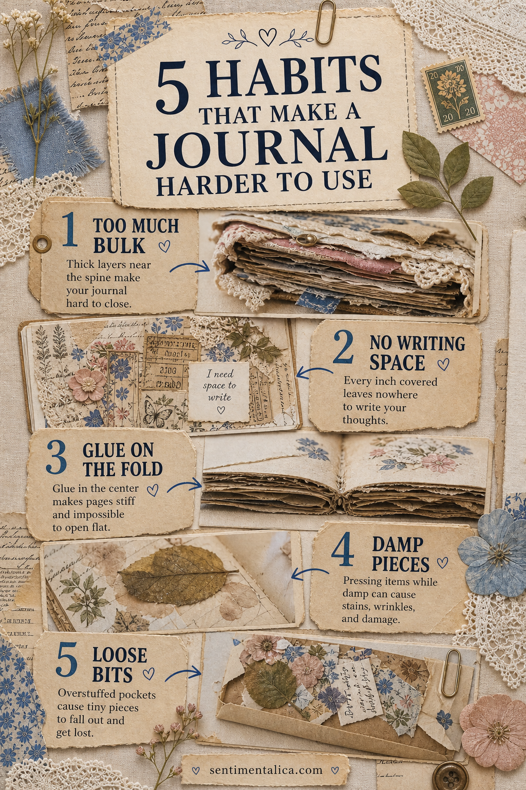

A junk journal does not have to lie perfectly flat or look professionally bound. Its crooked edges are part of the pleasure. But there is a difference between charming imperfection and a page that fights you every time you open it.
Most frustrating pages begin with one small habit, repeated without noticing. Before you tear everything apart, check these five places. A gentle adjustment is usually enough.

1. Building too much bulk beside the spine
Buttons, layered lace, folded pockets, and thick flowers are lovely, but they become a hinge-blocking wall when they all sit near the center fold. Move the thickest pieces toward the outer edge. If one spread already has a bulky cluster, keep the next two spreads quieter so the book can recover.
2. Covering every possible writing place
A page can be visually full and still feel unfinished because it has nowhere for your own voice. Leave one calm patch: a blank label, the back of a tag, a lightly patterned margin, or a card tucked into a pocket. Even three handwritten lines turn a decorated page into a memory.
3. Gluing across a fold
Paper needs room to bend. When a collage crosses the gutter, crease it first and use adhesive sparingly at the fold. Better still, split the element into two pieces and leave a narrow breathing line between them. The spread will open more naturally and the paper will be less likely to tear.
4. Sealing natural pieces before they are dry
Pressed flowers, leaves, dyed papers, and tea-stained tags can hold more moisture than they seem to. Let them dry completely under clean paper before adding them. If a leaf still feels cool or flexible, give it another day. This small pause helps prevent stains, rippling, and trapped dampness.
5. Making pockets that release everything
A pocket should invite discovery, not scatter scraps across the floor. Test it by gently tilting the book. If pieces slide out, deepen the pocket, add a small side tab, or group tiny items inside one envelope. Keep the contents to a few meaningful pieces rather than filling every last millimeter.
A useful final test
Close the journal without pressing it, open it to three random spreads, and write one sentence. If it closes comfortably, opens without strain, and gives your pen a place to land, it is working. That matters more than whether every corner is decorated.
Repair gently instead of starting over
If an older page fails the test, change the smallest possible thing. Remove one thick embellishment and reuse it on the cover. Turn a crowded cluster into a pocket by gluing only its edges. Add a folded writing card over a place that feels too busy. Reinforce a strained fold with a narrow strip of thin paper rather than another heavy layer.
For loose pieces, make one labeled envelope and keep it with the journal until you decide where they belong. You do not have to solve every page in one sitting. A slow repair preserves the choices you still love.
You are allowed to leave space. You are allowed to stop before the page looks “finished.” Often, that is the choice that makes a journal feel most alive.
Image note: Some visuals in this article were created with AI and curated by Sentimentalica.